Fourteen sign-in pages from products people already use, three designers worth stealing a principle from, and the sketches that came out of it. The last sketch is the one being built.
Captured live on 24 Nov 2026 at 1280×800. Blue border marks the ones I'm taking something from.
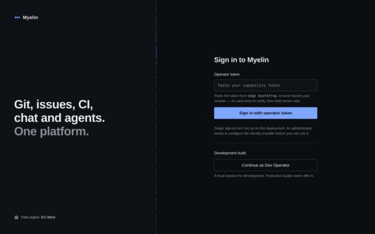
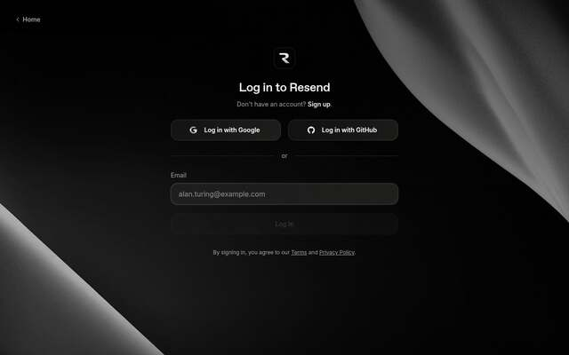
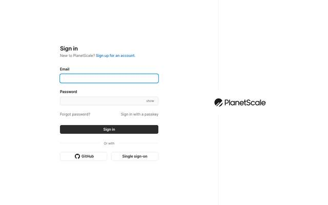
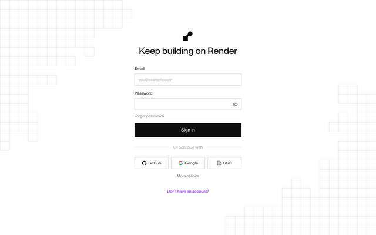
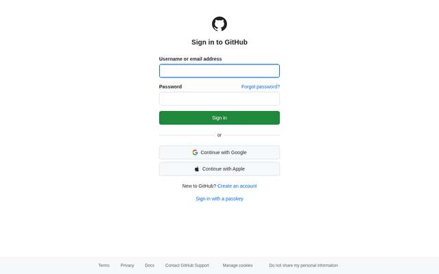
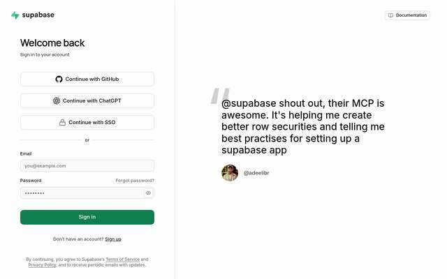
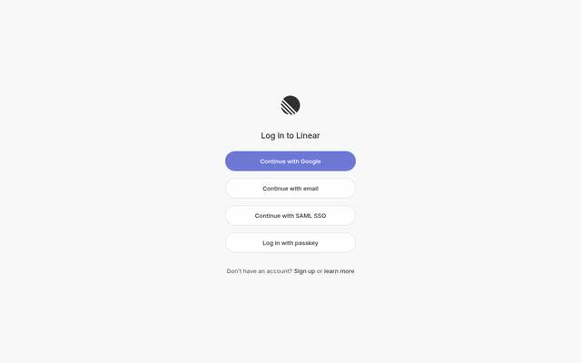
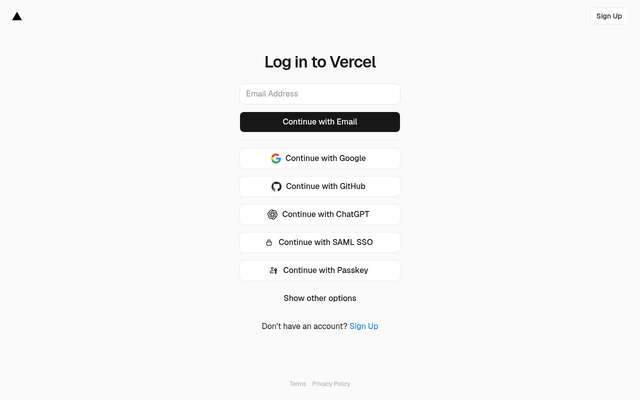
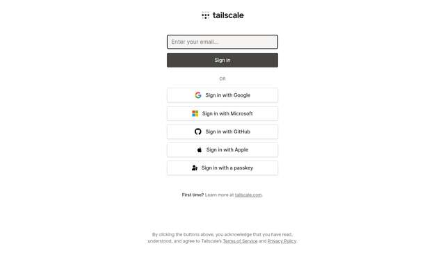
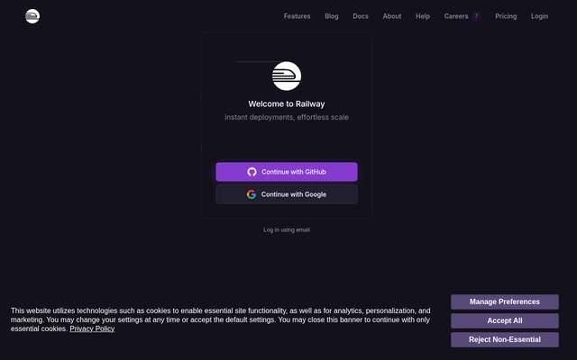
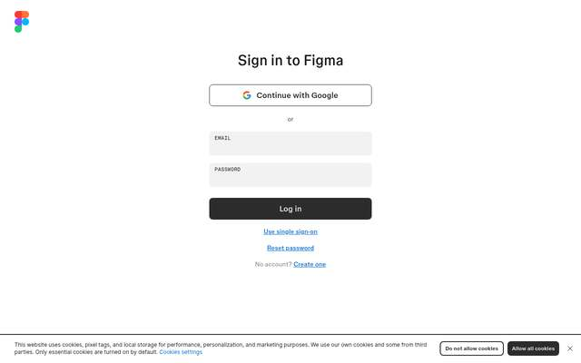
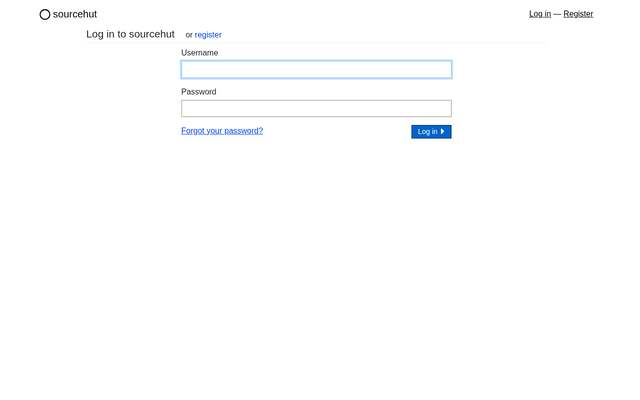
A logo, a centred column, a stack of buttons. Swap the logos and you could not tell them apart. This is what "boring" looks like, and it is where my first redesign landed.
Resend's fold, Stripe's ribbon, Fly's landscape, Render's cells. One strong shape, given real room, and a quiet form beside it.
Every one of them signs in a person: an email, then a password, a provider, or a passkey. A pasted capability token appears nowhere.
The drawings below are my own studies of each principle, not reproductions of their work.
His 1955 Beethoven concert poster is nothing but concentric arcs on a measured angular grid, thickening as they move outward. Mathematical, and louder than any illustration.
Taking: the arc composition itself. A myelin sheath in cross-section is concentric layers wrapped around a nerve fibre, so the form is the product's name drawn literally.
Designing Programmes (1964): don't draw one solution, write the rule that generates every solution.
Taking: the arcs are computed, not drawn. One rule, different cuts: sign-in gets a settled sheath, the invitation page gets one that is still open and closes as you set a password.
"Good design is as little design as possible." His Braun faces carry only the controls you need, each labelled with what it does.
Taking: the form. Two fields, one button, plain labels. No method menu, no icons in buttons, no helper paragraph explaining a concept the visitor should never have met.
to Myelin
Welcome back to Myelin.
New here? Accounts are created by invitation. Ask a teammate for a link.
Welcome back to Myelin.
New here? Accounts are created by invitation. Ask a teammate for a link.
You've been invited to acme on Myelin.
At least 10 characters.0 / 10
Welcome back to Myelin.
New here? Accounts are created by invitation. Ask a teammate for a link.
Email and password. Single sign-on beside it where a deployment has configured one. No operator token on the page at all.
Open an invitation link, choose a name and a password, and you are in. The first link comes from whoever runs the deployment; after that, any member can make one for a teammate.
There is no mail server to send a reset, so the page says so plainly: ask your administrator for a reset link. It opens the same page as an invitation.